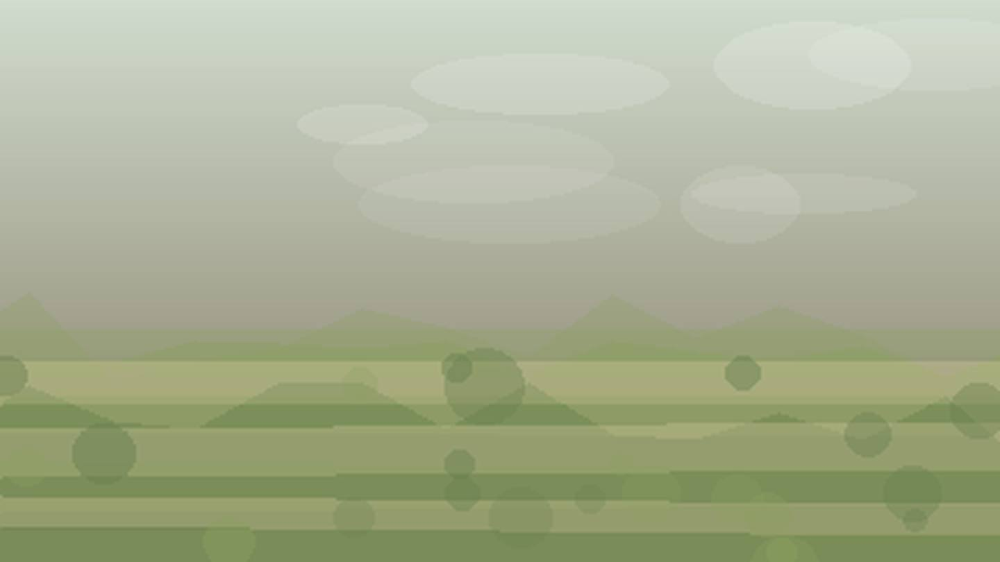

Главная / Самарская область

Самарская область
Что посадить
Что посадить
в Самарской области
Выберите природную зону в Самарской области: условия внутри региона различаются по теплу, влаге, ветру и длине сезона.
волжская зона: тёплая степная зона сильна для овощей, бахчевых и сада при контроле влаги. Ориентиры внутри зоны: Самара, Тольятти.
Открыть страницу зоны → центральная зонацентральная зона: тёплая степная зона сильна для овощей, бахчевых и сада при контроле влаги. Ориентиры внутри зоны: Сызрань, Новокуйбышевск.
Открыть страницу зоны → южная степьюжная степь: тёплая степная зона сильна для овощей, бахчевых и сада при контроле влаги. Ориентиры внутри зоны: Чапаевск, Безенчук.
Открыть страницу зоны → юго-восточная сухая зонаюго-восточная сухая зона: тёплая степная зона сильна для овощей, бахчевых и сада при контроле влаги. Ориентиры внутри зоны: Большая Черниговка, Пестравка.
Открыть страницу зоны →